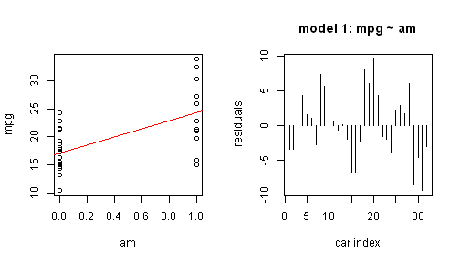
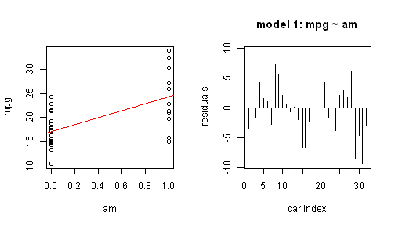
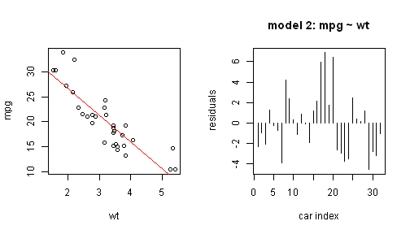
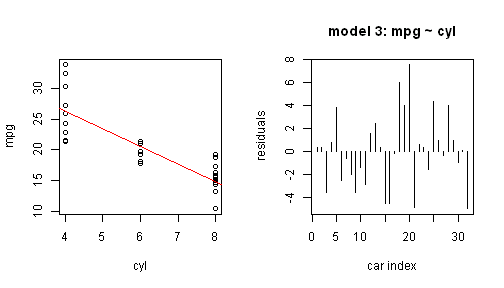

data(mtcars)
par(mfrow = c(1, 2))
plot(mpg ~ am, mtcars)
fit1 <- lm(mpg ~ am, data = mtcars)
abline(fit1, col = "red")
plot(residuals(fit1), type = "h", main = "model 1: mpg ~ am", xlab = "car index",
ylab = "residuals", )

tommy sheu
data(mtcars)
par(mfrow = c(1, 2))
plot(mpg ~ am, mtcars)
fit1 <- lm(mpg ~ am, data = mtcars)
abline(fit1, col = "red")
plot(residuals(fit1), type = "h", main = "model 1: mpg ~ am", xlab = "car index",
ylab = "residuals", )

data(mtcars)
par(mfrow = c(1, 2))
plot(mpg ~ wt, mtcars)
fit2 <- lm(mpg ~ wt, data = mtcars)
abline(fit2, col = "red")
plot(residuals(fit2), type = "h", main = "model 2: mpg ~ wt", xlab = "car index",
ylab = "residuals", )

data(mtcars)
par(mfrow = c(1, 2))
plot(mpg ~ cyl, mtcars)
fit3 <- lm(mpg ~ cyl, data = mtcars)
abline(fit3, col = "red")
plot(residuals(fit3), type = "h", main = "model 3: mpg ~ cyl", xlab = "car index",
ylab = "residuals", )

## [1] 720.9
## [1] 278.3
## [1] 308.3